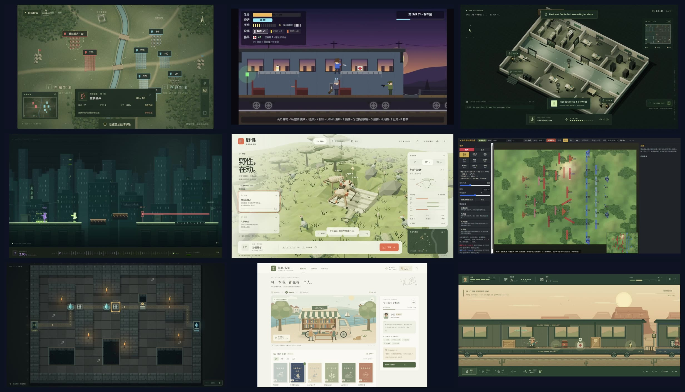
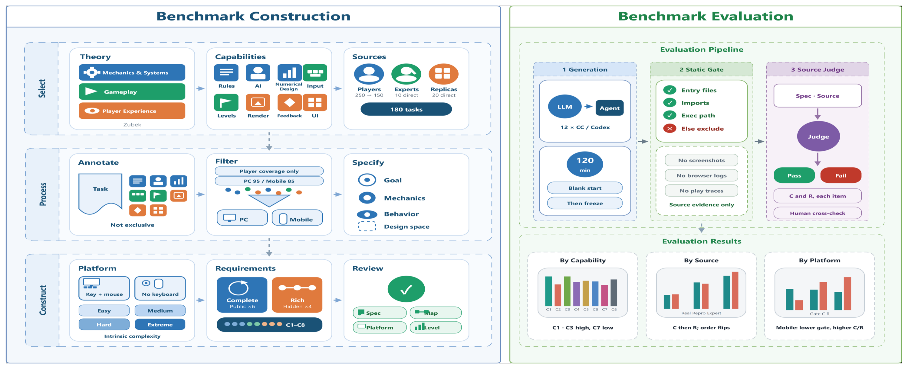
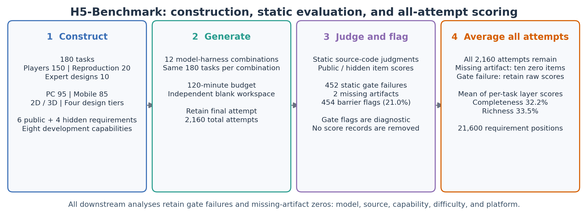
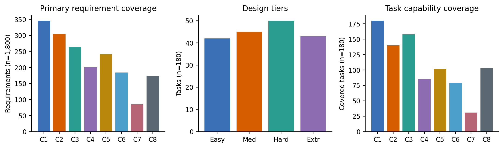

A single score can’t say which game-development capabilities an agent has. Requirement-level evidence can.
Complete game generation requires agents to coordinate rules, interaction, state, and presentation throughout a long-horizon development process. A single game-level score cannot identify which development capabilities agents implement or where requirements remain unmet. We introduce OCTAVE, which organizes tasks by eight Capability Dimensions and diagnoses implementation through requirement-level evidence. Its 180 tasks and 1,800 Evaluation Requirements cover player requests, commercial mechanics, expert designs, PC Web, Mobile Web, 2D, and 3D. Public Completeness requirements and hidden Richness requirements distinguish explicit functionality from deeper system relationships.
Across all attempts from 12 model–harness combinations, retaining static-gate-failure judgments and assigning zero to missing artifacts, Completeness and Richness are 32.2% and 33.5%; 21.0% of attempts are flagged as gate failures or missing artifacts. Relative public/hidden performance varies across task sources, and capability orderings vary with task conditions. A limited human cross-check identifies human-satisfied but machine-failed requirements as the dominant disagreement. OCTAVE extends complete game generation evaluation to diagnostics grounded in requirements, capabilities, and task conditions.

Three things a game benchmark has to get right

Compared with existing benchmarks
Task suite
Example task
From a project folder to a score


Eight capability dimensions
Every requirement is tagged with the capability it primarily tests. Each task has six public Completeness requirements and four hidden Richness requirements.
How current agents score
Requirement pass rates (%) over all 180 tasks. Click a column to sort.
What we found
One task, side by side
Each pair below was built from the identical task specification. Both clips start together.
Games the agents built
Gameplay recordings, sampled across score tiers for each model: strong, typical and weak results are all shown.
Cite this work
TODO: acknowledgements. Thanks to the teams behind the engine and harness this benchmark builds on.
@article{rezona2026octave,
title = {OCTAVE: A Capability-Resolved Benchmark for End-to-End HTML5 Game Generation},
author = {Author, One and Author, Two and Author, Three},
journal = {arXiv preprint arXiv:XXXX.XXXXX},
year = {2026}
}